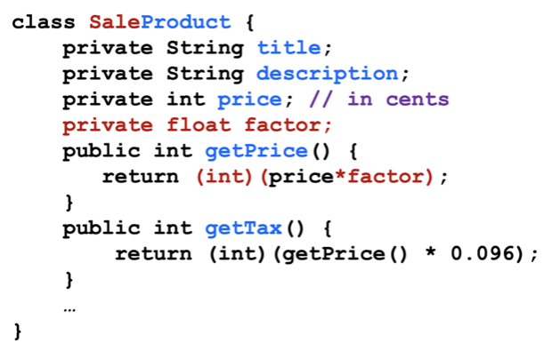

Read this first
This template was created by the SEBE Design Pod and is available for your use when creating your content. The template provides a variety of options for styling page text and images. Some tips on using this template:
There are additional layout options available in the '_SEBE_Advanced' template.
Important! This template is designed and tested to work with correctly formatted HTML code. Any deviation from this may result in the template failing to render as it should. For any assistance with HTML formatting, please contact SEBE CloudDeakin Support.
For more information about this template, visit the Making the most of web pages in SEBE CloudDeakin page in the Designing Your Unit section of the SEBE Staff Hub.
By changing the Heading 3 above to default, blue, turquoise or pink you can change the colour theme of your SEBE CloudDeakin template page.
When this page is published the Heading 3 above will be removed, but it will still be here in edit mode if you wish to change the colour theme.
There is no need to delete these instructions or the Heading 3 above. They are only visible in edit mode and will be removed when your page is published.
By using the keyword 'banner' as a <H3> (Heading 3), an image below that heading until the next <HR> (Insert Line from the dropdown next to the Insert Quicklink) will be included inside an Image Container that will render the image as a banner image.
There is no need to delete these instructions or the Heading 3 above. They are only visible in edit mode and will be removed when your page is published.
Inheritance is the topic of fundamental importance in object-oriented design. The idea is to keep common code in one class (known as the parent or the super-class), and only extend it by making derived class (known as child or sub-class), which can add or modify parent class behaviour.
A typical example is that if we have to implement various roles for a Person in our system. E.g., a Person can be a Student, or a Lecturer, or a Tutor. The specialized roles of a Student, Lecturer and Tutor, have common features and functionalities, e.g., they have name/age/ID, they all attend a class, they commute to campus, etc. Some Persons have specialized operations, e.g., Tutor and Lecturer are being paid, while Student can enrol in a class. This is an ideal scenario to implement inheritance, where we make a Person class and let Student, Lecturer and Tutor be the derived classes.
We can use inheritance when we have the case of is-a or is-a-kind relationship between entities. E.g., Tutor is a Person or Tutor is-a-kind of Person.
There, however, is another case when you can use inheritance, and that is just to avoid code duplication. E.g., if we have a Product class that looks like:
Well, let us suppose that our requirement changes, and we are to create a new product called SalesProduct. Ignoring OCP, we can just create a new class as following:

which results in lots of code duplication. Better option, would have been to make use of inheritance and just extend the Product class as follows:

We can use inheritance when we can factor our repeated code, i.e., to create a new class, we can just write the difference between the two classes.
Let us see what Ollie has to say:

Doesn't these two uses of Inheritance lead to confusion? E.g., I am using the same syntax for inheritance, and I am not sure, if I am doing inheritance for implementing is-a relationship or doing inheritance for factoring-out repeated code.
Ollie is right. This is one of the dark sides of the way most programming languages (such as C# and Java) implements inheritance. Let us delve into this matter a bit more.
Inheritance, when its intended use is to implement is-a relationship leads to what is known as Super-Typing and Sub-Typing. E.g., when
We have created Student, Book and Circle as a Sub-Types, whereas, Person, Library Holding and Shape are Super-Types.
E.g, if every B is A, as shown in the following figure:
We are implicitly declaring that A is a Super-Type and B is a Sub-Type. For the sake of completeness, let us draw the other cases as well:
“B is a subtype of A” means that “every object that satisfies the rules for a B also satisfies the rules for an A”.
As a result of sub-typing, the code that has been written using object A's specification operates correctly even if given an object of class B. This simplifies design significantly.
Sub-Types are substitutable for Super-Types only if:
Inheritance as is allowed in modern programming languages can easily break these two requirement. E.g,
Let us formally define Sub-Typing now:
Substitution (or Sub-Type) is a specification notion such that class B is a subtype of class A if and only if an object of class B can masquerade as an object of class A in any context.
If our purpose is to implement is-a or is-a-kind relationship, we are definitely creating a Super-Typing and Sub-Typing relationship. However, with the way inheritance is implemented (as discussed earlier, e.g., make attributes/operations private in parent class, or add a new operation in child class, etc.), we break the Substitution or Sub-Typing definition. This is where Liskov Substitution Principle comes into effect. It says that:
The principle defines that objects of a Super-Type shall be replaceable with objects of its Sub-Type without breaking the application. That requires the objects of your Sub-Type to behave in the same way as the objects of your Super-Type.
LSP dictates that related classes should conform with each other. A class S conforms to class T, if an object of class S can be provided in any context where an object of class T is expected and correctness is still preserved when any accessor method is executed.
This can be enforced by:
In absence of any adequate name, we can call the case 'implemented-inheritance' - where we are using inheritance to just extend the functionality of the our parent class. As we discussed earlier, it factors-out repeated code, as we just write the difference in the new class.
It can be seen that sub-typing and implemented-inheritance have two different goals. The problem is that when we use inheritance, we can not enforce or specify that we are doing what. As a programmer and designer, it is your responsibility to be clear about the intention. Liskov Substitution Principle can be used as a guiding principle here.
Let us see in this section, if we can come-up with design programs where we achieve ONLY sub-typing or ONLY implemented-inheritance.
This is where you must make sure that you are adhering to Liskov Substitution Principle. That is the parent class and child class adheres to the notion of Super-Type and Sub-Type. The best strategy to achieve this is to make sure that dependence exists only on the Abstract entities i.e., Abstract Class or Interface. Example, if you have a Lecturer class, from which Tutor class is extended. Let us suppose that so far, all the roles of Lecturer are also done by Tutors, in this case, we do achieve the super-typing and sub-typing behaviour. However, let suppose that Lecturer now has an additional functionality of settingExam(). In this case, use of inheritance is not justified, as we are breaking the super-typing and sub-typing behaviour.
The solution is to depend on the abstraction (embodied either through Abstract class or Interface). Again, if we have an interface say 'Person', which is extended (implemented) by the two - Lecturer and Tutor classes - we have the sub-typing and super-typing behaviour. An interface defines the setttingExam() operation, which is only implemented by the Lecturer class. But the any where the reference to super-class is present, we can replace it easily by that of the two sub-classes.
If your goal is to extend the functionality of the class, inheritance is not the only way you can do it. For example, if we have a Fruit class:
class Fruit {
public int Peel() {
Console.WriteLine("Peeling is appealing.");
return 1;
}
}
Let us suppose that we want to extend the fruit class, by adding a new function called Cook(), we can extend it as:
class cFruit : Fruit {
public int Cook() {
Console.WriteLine("Cooking the fruit with " + Peel() + " peels.");
return 1;
}
}
Now, we can call the cFruit from the calling program as:
class Example1 {
public static void Main() {
cFruit f = new cFruit();
f.Cook();
}
}
Definitely a case of implemented-inheritance, is this the only way to achieve the extension behaviour. Well, in this case, inheritance can be avoided all together, e.g, we can create a cFruit class as follows (without using inheritance):
class cFruit {
private Fruit f = new Fruit();
public int Cook() {
Console.WriteLine("Cooking the fruit " + f.Peel() + " peels.");
return 1;
}
}
Now, you can obtain our desired functionality as:
class Example2 {
public static void Main() {
cFruit f = new cFruit();
f.Cook();
}
}
This strategy is also called containment or Composition, and is alternative to inheritance if our only purpose is to extend the functionality of the base class.
Have a look at the following video if things are not clear at this time: